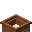

Mortar and bowlThe mortar
Put it in, then use with an empty hand to grind.
The mixing bowl
Add what's needed, then knead. Crouch to open it.
Baking
Bake dough and batter in a furnace.
A loaf of dough gives two of bread.
Pastry
Pies, tarts and pasties all start with pastry.
Muffins and crumble want flour.